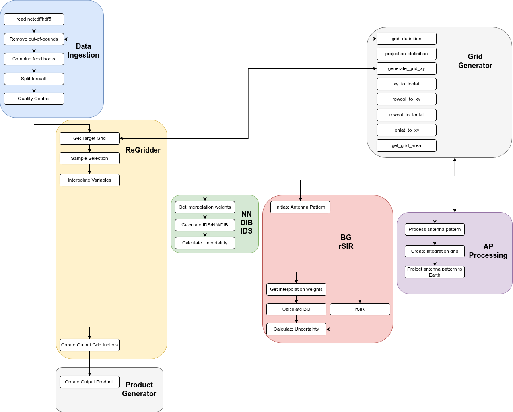
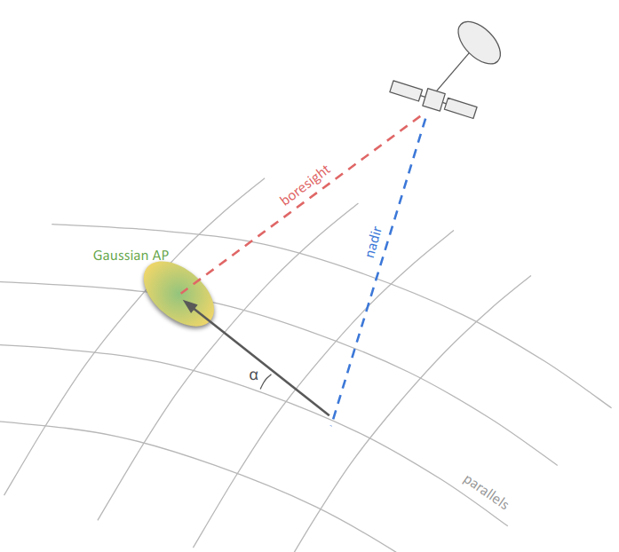

5. Implementation#
5.1. Algorithm Flow#
The toolbox is governed and initiated by use of a configuration file, which provides users with a variety of options. Fig. 1 depicts the flow of data through the toolbox. The white boxes indicate functions that sit within the coloured processing modules. The toolbox has been designed such that input data types, ingestion functionality, regridding algorithms, and modular functionality, in general, can be added relatively easily. It is also intended that the modules can be used independently or outside of the main pipeline.


Fig. 1 CIMR RGB Data Flow#
As can be seen from Fig. 1, there are no corrections implemented on the data, such as land/water contamination, atmospheric, faraday rotation etc.
5.2. Points Selection#
The points selection algorithm lies within the ReGridder module and utilises the pyresample python library. The search radius and the number of neighbours desired are user-configurable. pyresample calculates orthodromic distances of the Earth’s surface based on spherical geometry. At the time of writing, the points selected for use in the regridding algorithm are based solely on the proximity to the target location, as opposed to considering scan numbers or feed horn numbers when selecting points.
5.3. Initializing Antenna Patterns#
Antenna patterns need to be initialised before being projected to the Earth’s surface.
The functional shape of the antenna pattern in spherical coordinates is decided based on the chosen projection method (See Section XXX)
All values for the gain $\(\theta\)\( > \)\(\theta_{max}\)\( are set to zero (where the parameter \)\(\theta_{max}\)\( is configurable by the user, and a value of 40\)\(\deg\)$ is recommended (and applied as default), as usually, no feedhorn has a significant value of gain at such an angle).
All values of gain smaller than a user-defined threshold are set to zero.
The remaining gains are passed through the RGB software for projection to the Earth, normalisation occurs after projection.
An antenna pattern radius (used to size the integration domain) is defined by estimating the largest radius on Earth where the gain is non-zero (i.e. above the threshold), as shown in Figure

Fig. 2 Sketch of the procedure to estimate the maximum AP radius. This provides an upper limit to the size of the integration domain. First, the boresight of the antenna feedhorn is intersected with the Earth’s surface. The distance on Earth between the boresight location and furthest point with above-threshold projected gain is then measured. The Earth is assumed to be a sphere in this calculation.#
Antenna patterns are fully characterised by four values of the gain|: H-pol cross-pol, H-pol co-pol , V-pol cross-pol, V-pol co-pol. These four values allow the definition of a 4x4 Mueller matrix, which is required to compute the full response of the optical system to the incoming polarised radiation. Due to the additional computational cost of projecting the full Mueller matrix to Earth, a scalar value of the gain is derived by averaging the cross and co-polarisation terms. The full Mueller matrix is expressed as:
where \(Re\) and \(Im\) represent the real and imaginary components respectively. The total scalar gain measured for incoming H-polarized radiation is \(G_H = \sqrt{G_{hh} + G_{hv}}\) and similarly for the gain measured for incoming V-polarized radiation \(G_V = \sqrt{G_{vv} + G_{vh}}\). Thus, the scalar gain can be estimated as an average of H and V modes:
5.4. Image Domain/Integration Grid#
A temporary integration grid is used for calculations involving projected antenna patterns. This is required by the following algorithms:
BG/rSIR: for each output grid cell (L1C) or output antenna pattern (L1R), the neighbouring antenna patterns are projected to the integration grid such that the integrals in Section XXX can be computed; the size of the integration grid is such that all projected patterns fit in the grid, taking into account their radius (estimated as explained in Section XXX, point 5).
Since the integration grid is needed only for the purpose of performing intermediate calculations, it is not required to be of the same type as the user-selected output grid. For this reason, we chose an EASE2 grid for this purpose, which as a mathematically simple definition and is convenient for computing integrals being an equal-area projection.
The resolution of the integration grid can be configured by the user. The appropriate choice of integration grid resolution depends on the source band to be regridded (as well as the target band for L1B–>L1R) since it should be high enough to resolve the projection of the antenna patterns to Earth (Ka-band data will require a resolution of 1km at most, while L-band data can be regridded with 3km). Table 1 provides the recommended resolutions for each band and allow the resolution of the antenna pattern main lobe with at least 30 pixels.
Instrument/Band |
Integration Grid Resolution |
|---|---|
SMAP L |
3 km |
CIMR L |
3 km |
CIMR C |
1.5 km |
CIMR X |
1 km |
CIMR K |
0.5 km |
CIMR Ka |
0.25 km |
5.5. Antenna Pattern Projection and Measurement Response Function#
The projection of antenna patterns to Earth, the result of which is referred to as the Measurement Response Function (MRF), can be achieved with three different (user configurable) techniques:
Gaussian
Gaussian_projected
Instrument
5.5.1. Gaussian#
The “gaussian” projection technique is a simplified version of the antenna pattern projection, intended for situations in which a shorter computational time is desired, as well as allowing developers/users to remove performance sensitivities to antenna patterns and their projections when comparing regridding algorithms or for those users without access to the instrument antenna patterns. Projection from the antenna to Earth is not performed, and the MRF is built directly on the Earth’s surface. The antenna pattern for a measurement at location \((x_0, y_0)\) is assumed to be a 2D gaussian on the integration grid, defined by the equations:
with the following parameters:
The standard deviation of the two perpendicular directions (\(\sigma_x\) and \(\sigma_y\)) are defined by the user and should be chosen based on the instrument and band under consideration.
The rotation angle \(\alpha\) with respect to the latitude line passing through \((x_0, y_0)\) is computed to take into account the satellite position and the boresight corresponding to the selected feedhorn.


Fig. 3 Sketch showing how the rotation angle, \(\alpha\), of the 2D gaussian is cmputed when using the “gaussian” projection method for antenna patterns.#
5.5.2. Gaussian_projected and Instrument (CIMR)#
These two methods employ the same technique for the projection of the antenna pattern. The difference is in the assumed functional shape of the antenna pattern in the antenna reference fram. For “gaussian_projected”, the antenna pattern is a gaussian in the (\(\theta\), \(\phi\)) spherical coordinate system, with user-defined variance (\(\sigma_{\theta}\), \(\sigma_{\phi}\)). For “instrument”, the antenna pattern is loaded from the actual beam files of the radiometers (SMAP, CIMR).
Subsequent to either loading the beam file of the creation of a Gaussian in its place, the patterns are projected to the Earth’s surface. The projection algorithm requires the following values, all obtained from the input L1B data:
The position (\(x_{0}\), \(y_{0}\), \(z_{0}\)) of the satellite at the moment of the measurement (in an ECEF coordinate system)
The attitude matrix \(A\) of the satellite in an ECEF coordinate system (CIMR, not available for SMAP)
The scan angle, \(\theta_{scan}\)
and the following specifications of the radiometer:
The tilt angle, \(\theta_{tilt}\)
The feedhorn offsets (\(\theta_{off}\), \(\phi_{off}\))